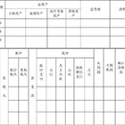

医联体上级医院 ——
| 一、医院基本信息 | |||||
|---|---|---|---|---|---|
| 医院名称 | 广东江门第一人民医院 | 性质 | 国有 民营 其他 | ||
| 医院地址 | 广东省江门市越秀区 北京路01号 | 等级 | 二甲 三乙 三甲 | ||
| 成立时间 | 1983年 | 专科/综合 | 专科 综合 其他 | ||
| 主要科室 | 呼吸科、心脏外科、空腔科、脑外科、皮肤科、内科、骨科 | 特色专科 | 空腔科、呼吸科 | ||
| 在职人数 | 200 | 高级职称 | 50 | 中级职称 | 100 |
| 院长姓名 | 王近平 | 学历/专业/职称 | 本科/临床/高级 | 联系电话 | 13811110000 |
| 科室负责人 | 王克强 | 学历/专业/职称 | 本科/临床/高级 | 联系电话 | 13800001111 |
| 财务负责人 | 王德江 | 学历/专业/职称 | 本科/会计/高级 | 联系电话 | 13800001112 |
| 开户银行 | 中国银行广州分行 | 开户账号 | A123456789 | 开户名称 | 广东江门第一人民医院 |
| 二、医院经营指标统计表 | |||||
| 年份 | 门诊量（人次） | 日均门诊量（人次） | 实际开放病床数（张） | 床位使用率（%） | 住院人数（人次） |
| 2016年 | 1500000 | 4109.589041 | 200 | 89.00% | 6000 |
| 2017年 | |||||
| 三、医院主要财务数据 | |||||
| 主科目 | 次科目 | 2014年 | 2015年 | 2016年 | 2017年 |
| 资产负债表 | 总资产 | 150000000 | |||
| 流动资产 | 80000000 | ||||
| 总负债 | 1000000 | ||||
| 流动负债 | 40000000 | ||||
| 收入费用表 | 医疗收入 | 20000000 | |||
| 财政补助收入 | 60000000 | ||||
| 其他收入 | 30000000 | ||||
| 四、财务指标分析 | |||||
| 名称 | 计算公式 | 2016年 | 2017年 | ||
| 财产负债率 | 负债总额/财产总额*100% | 26.67% | |||
| 流动比率 | 流动资产/流动负债*100% | 400.00% | |||
| 总资产周转率 | （医疗收入+其他收入）/平均总资产 | 23.33% | |||
| 总资产增长率 | （期末总资产-期初总资产）/期初总资产 | 8.60% | |||


- 